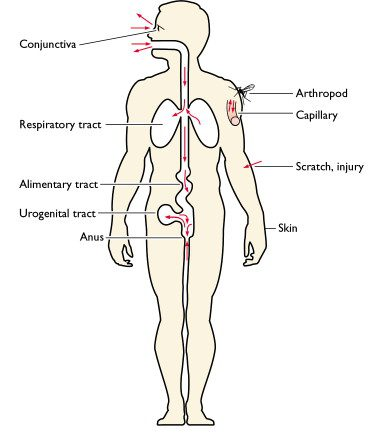
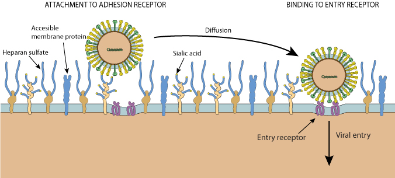
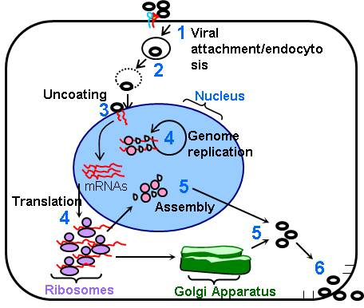
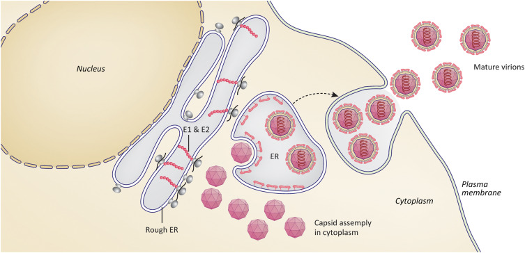

Mechanisms of Infection
This page explains how viruses enter the body, infect cells, replicate, spread, and cause symptoms.
Key Takeaways
- Viral infections occur when viruses enter the body, infect host cells, and begin replicating
- The infection process follows key stages: entry, attachment, replication, and release
- Viruses rely on host cell machinery to reproduce, effectively turning cells into “virus factories”
- Symptoms can result from both direct cell damage and the body’s immune response
- Viruses can evolve and evade immune defenses, affecting spread, severity, and reinfection risk
What is an Infection?
An infection happens when a pathogen (such as a virus) enters the body, successfully infects cells, and begins replicating. Infection does not always lead to serious disease, but it can trigger symptoms and immune responses depending on the virus and the host. [16]
How Viral Infections Start
Viruses cannot reproduce on their own. To replicate, they must enter living cells and use the host cell’s machinery to make new viral particles. This infection process occurs in stages, and each stage is a possible target for immune defenses or antiviral treatments. [17]
📍 Entry into the Body
Viruses usually enter through specific routes such as the respiratory tract, digestive tract, broken skin, or mucous membranes. The route of entry often influences which tissues are infected first and how the disease spreads through the body. [16]

🔑 Attachment (Receptor Binding)
To infect a cell, a virus must attach to it. Viral surface proteins bind to specific receptors on the host cell. This “lock-and-key” matching helps explain why some viruses infect certain species (host range) or certain tissues (tropism). [16]

🚪 Entry into the Cell
After attachment, viruses enter cells through processes like membrane fusion (common for enveloped viruses) or endocytosis, where the cell pulls the virus inside in a vesicle. The goal is to deliver the viral genetic material into the cell. [16]
📦 Uncoating
Uncoating is when the viral capsid breaks apart and releases the viral genome (RNA or DNA) into the cell. Once the genome is free, the virus can begin making viral proteins and copying its genetic material. [16]
Replication Inside Cells
Once inside, the virus turns the cell into a “virus factory.” The cell’s ribosomes, enzymes, and energy are redirected to make viral proteins and copy the viral genome. The details vary depending on whether the virus is DNA- or RNA-based, but the overall goal is to build many new viruses. [18]

🧬 Viral Gene Expression
Viral genes are used to produce proteins needed for replication, immune evasion, and building new virus particles. Some viruses replicate in the nucleus, while many RNA viruses replicate in the cytoplasm. [18]
🧪 Mutation and Evolution
Many viruses, especially RNA viruses, accumulate mutations because their replication enzymes can be prone to errors. Mutations can sometimes help a virus spread faster, resist immune defenses, or change how severe the disease is. [18]
Assembly and Release
After enough viral components are produced, new virus particles are assembled. They then leave the cell to infect additional cells. The release method can affect how much damage occurs and how strongly the immune system reacts. [19]

💥 Cell Lysis
Some viruses rupture (lyse) the host cell to escape, which kills the cell. This can cause tissue damage and inflammation, contributing to symptoms. [20]
🫧 Budding
Enveloped viruses often leave the cell by budding, taking part of the host cell membrane as their envelope. Budding may allow the cell to survive for a while, but it can still disrupt normal cell function. [19]
Key Stages of Viral Infection
| Stage | What Happens | Why It Matters |
|---|---|---|
| Entry | Virus enters the host through specific routes | Determines exposure and initial site of infection |
| Attachment | Viral proteins bind to host cell receptors | Controls host range and tissue tropism |
| Replication | Viral genome is copied and viral proteins are produced | Drives viral load and infection severity |
| Release | New virus particles exit the infected cell | Causes tissue damage and enables spread |
Summary of the main stages of viral infection and their biological significance.
Spread Through the Body
Some infections stay local like in the upper respiratory tract. Others spread more widely through the bloodstream or lymphatic system, reaching multiple organs. This is one reason why different viruses cause very different symptoms and levels of severity. [21]
🌡️ Symptoms and Tissue Damage
Symptoms can be caused by direct cell damage from viral replication, but they can also be caused by the immune response (inflammation or fever). In some diseases, immune-driven damage can be a major part of severe illness. [22]
🛡️ Immune Response and Control
The innate immune system responds quickly using interferons and inflammatory signals to slow viral replication. The adaptive immune system follows with antibodies and T cells that can clear infected cells and build long-term protection. [23]
Immune Evasion
Viruses have evolved strategies to avoid being eliminated. Some interfere with interferon signaling, some hide inside cells, and others change their surface proteins over time. These strategies can make infections harder to control and can influence reinfection risk. [24]
🎭 Why Immune Evasion Matters
If a virus evades immune detection, it may replicate longer, spread more efficiently, or cause more severe disease. Immune evasion is also one reason why vaccines may need updates or boosters for some viruses. [24]
Common Misconceptions
Myth: “If you’re infected, you will always get sick.”
Not always. Some infections are asymptomatic, meaning the virus replicates but causes few or no noticeable symptoms. Severity depends on viral factors (dose, variant, tropism) and host factors (immune status, age, underlying conditions). [25]
Why do symptoms sometimes appear days after infection?
Many viruses have an incubation period. During this time the virus is replicating and spreading before symptoms become strong enough to notice. Symptoms often increase as viral load rises and as the immune response ramps up. [26]